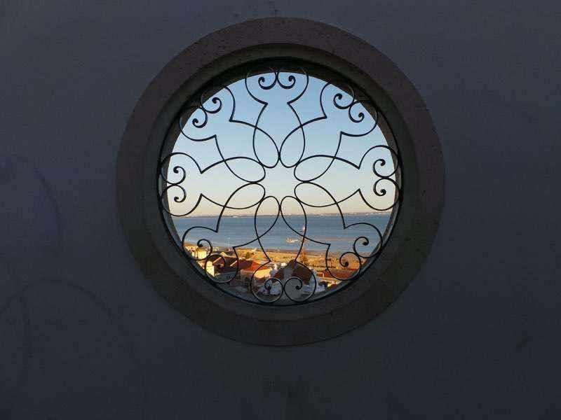

Lisboa — há mais de 30 anos38°42′N 9°08′W
Não desenho bares. Desenho experiências.
Há mais de trinta anos que crio bares, restaurantes e lugares em Lisboa — do primeiro esboço à última ronda.
A noite começa aqui
Manifesto
Um lugar não é paredes e um balcão. É a luz às onze da noite, a música um pouco mais alta do que devia, o copo que chega antes de o pedir, o estranho que à saída já é amigo. Passei a vida a afinar estes detalhes invisíveis — são eles que as pessoas levam para casa.
Três noites
Cada lugar,
uma pergunta.

Lisboa
Sakim
A minha própria casa. Uma sala comprida, um chão aos quadrados e uma mesa onde estranhos acabam a partilhar o jantar.
Entrar →
Lisboa
So What
Uma abóbada vazia que hoje tem fila à porta e um contrabaixo ao fundo.
Entrar →
Lisboa
A Tabacaria
Uma tabacaria de 1885 que nunca deixou de vender pequenos prazeres. Só mudou de horário.
Entrar →
Cada lugar começa com uma pergunta — e só acaba quando alguém não quer ir para casa.
Os catorze lugares → Como trabalho → Marcar consulta →